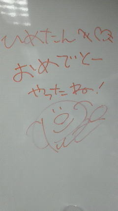

| 2012/04 15 Sun | ひめたん(* ゝω・*)ノ その131 |
※今日のブログは福袋みたいになってます。どゆことやって?読んでみたまえ。
静岡遠征報告(^^)/
かわごさん
(川後陽菜chan)のブログにあったように、寝坊したら困るってことで
何の予告もなく川後宅に押し掛けました。
そしてお泊まりした。ごめんね川後さーんありがとう(*^^*)
川後もひめきゅん
 ってブログに書いてあったから
ってブログに書いてあったから
ってブログに書いてあったから
「川後もひめきゅんっしょ?」って言ってみたの
そしたらスルーされました。つんでれ川後。萌。
そして
ろってぃ
(川村真洋chan)のブログにあったように、
長いことバス乗っておくって聞いたからピンクパジャマに身を包んで爆睡。
まりなちょすからもらったいちごの枕も持ってった!
え?まりなちょすってメンバーいたっけって?
そゆ質問にはあえて触れません♪
...とかゆーて。地元のお友達です('・ω・`)まりなちょす。
で!
清水エスパルスさんのホームグラウンドにお邪魔して
清水エスパルス
vs
ジュビロ磐田
静岡ダービーゆーことで盛り上がりましたね(*^^*)
乃木坂には富士市出身の
みゅみゅ
(若月佑美chan)と
磐田市出身の
まいまい
(深川麻衣chan)がおりますやんっ。
そうか同じ静岡でも、地元のチームとなると違うのか。
楽屋も燃えてましたのよー☆
昨日はねー雨降ってたのよ。
だから芝生でつるって滑ったりしてリハはハラハラしてたんだけどね
試合始まったらそんなのどうでもよくなった(*'ω`*)
グラウンドが本当に広くて、気持ち良く歌って踊れました!
サポーターのみなさん
試合前のうきうきした気分のなか、乃木坂のパフォーマンスを見てくださって
ありがとうございました(^^)
そして乃木坂ふぁみりーのみなさん
一緒に踊ってくださったり、声援も嬉しかった!
心強かったよーありがとうございました☆
でー終わってからなんとサプライズでお誕生日パーティ。
パルちゃん
がケーキ持ってお祝いに来てくれました!
さらにメッセージまで書いてくれたの!
パルちゃん大好きっ


はい。お誕生日ネタを3日も使い回すなんて卑怯なんだよ。許してください('・・`)
みゅみゅ
ままさんがプレゼントくださったの!
もう感動しちゃったよひめたん。本当にありがとうございます。
会いたかたったね〜ままさん。きっとみゅみゅに似てお綺麗なんだろうね(*^^*)
さらにメンバーエピソードは続く。
昨日は
あしゅ
(齋藤飛鳥chan)と腕組んで歩いたの//
あしゅーーぶろぐ見てるかなー?
やっとあしゅとのらぶらぶ自慢ブログに書いたぞ(`・ω・')どやどやどいや♪
いっつもね、あしゅと戯れたりなんかするたびに
「ブログに書こー♪」って言うのに結局忘れるの。
「どーせ今日も忘れるんだろっ?」ってあしゅに言われるんだけど...
ちゃんと書いたけーねっ
 にゃ
にゃ
にゃ
さらに!
ろってぃ
ブログでひめたんのこと紹介してくれてたから、お返しに☆☆
ろってぃは前に書いたことあるけど、乃木坂始まる前から唯一面識があって。
だから最初の頃とかひたすらろってぃにべたーりしてたの(//ω//)
ろってぃとひめたんの出会い、聞きたい(ω)?
ステージで歌いましょうみたいなやつで一緒になったのよ。
当時中元さん中2、川村さん中3とかだったかな。秋。
超きれいなお姉さんだーってのが第一印象(^^)
中2の自分は今よりもシャイな女の子だったのでーとか自分で言っちゃう。わら
初めての現場とか一人でふさぎこんでたわけです。
周りは年上の方ばっかりだったし。
そんな自分に声をかけてくれたのがそう、ろってぃ!
関西弁可愛いし、気づかいできるし、歌は上手いし。
素敵なお姉さんだなって思ってました(*/ω＼*)
その一回きりの出会いだと思ってたら10ヶ月後、出会ったの再び。
場所は乃木坂46スターティングメンバーオーディション3次審査会場。
うはあー奇跡だよ。びっくりした(ω)☆
普段のふにゃん♪て感じと、踊ってるときのキリっとした感じのギャップ
ろってぃの魅力だよね。魅せ方とかさすがって思ふ(^^)
最後に余談で、ろってぃままさんとひめたんままも仲良しなの。
たまに電話してるみたいです(*^^*)んんん
ふうー。
(*´・ω・*)ひめたん
コメント(91)
2012/04/15 19:36